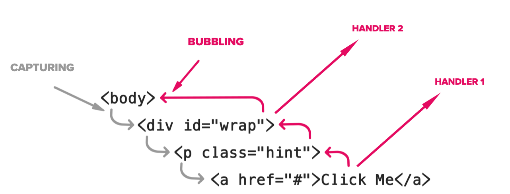

Всем привет. Меня зовут Вадим. Я работаю lead разработчиком в компании EPAM. Мне нравится иногда делать доклады с использованием Svelte и размышлять на темы из области what if …?. Собственно, то, что вы сейчас читаете - это результат объединения двух моих увлечений.
Почему стоит потратить время на прочтение? Конечно, в первую очередь - это то, что тема на слуху, стоит только бросить взгляд на гугл-трендс чтобы увидеть растущую популярность. А если посмотреть программу ближайшего HolyJs, то можно также несколько раз заметить знакомое слово.
Как водится, в любой классической истории необходимо присутствие протагониста. Таким протагонистом в этом докладе буду я сам. Но чтобы не ломать четвертую стену я буду называть себя “героем этого доклада” или просто “наш герой”.
Так вот, наш герой и его работа ничем не отличается от обычной рутины программиста. Просыпается к дэйли, работает и отдыхает за компьютером, сидит до поздней ночи. Но как я уже сказал, однажды этот привычный лад заканчивается и зерно сомнения дает всходы. Наш герой узнает, что за холмами, люди помимо реакта, используют другие фреймворки, а иногда и вовсе не нуждаются в них. Но самое удивительное, что редакс - это не единственный менеджер состояния. Наш герой загуглил mobx и оказывается он справляется со своей задачей на том же уровне, а иногда и лучше! Но вот, что странно - по всей документации красной нитью плетется слово реактивность.
Наверно, самый простой способ объяснить, что такое реактивность не используя термины из программирования - это сравнить ее с эффектом бабочки. Взмах крыла бабочки в Европе приводит к торнадо в Америке. Между двумя этими событиями может быть сколь угодно промежуточных событий, но они есть и мы знаем, что торнадо - это следствие взмаха крыла. Это как натянутое полотно пожарников, и все кто его держит точно почувствуют когда на него упадет человек. Но вернёмся к жизненным примерам.
Самый частый пример, который можно увидеть в любой статье про реактивность - это работа в excel.
Допустим у нас есть выражение типа A = B + C. Если у нас императивный подход, то в А попадет результат сложения В и С, использующих значения на момент выполнения этой операции. Переменные В и С могут быть сто раз перезаписаны с новыми значениями, но это никак не повлияет на значение А.
А теперь представим, что мы пишем код в excel. И у нас есть выражение типа А1 = B1 + C1. Два столбца и сумма двух ячеек в ячейке третьего. Теперь же, в любой из моментов, когда мы будем менять значения ячеек В1 или С1, значение ячейки А1 будет изменятся тоже. Этот процесс получил название - распространение изменений. А механизм, через который удается реализовать данный процесс, называют стримом, или потоком данных. Собственно отсюда и вытекают две главных составляющих реактивного программирования - реактивные ячейки и потоки данных.
Далее, если мы обратимся к принципам реактивного программирования, описанным в книге “Реактивное программирование в действии”, мы увидим:
Все это позволяет нам ослабить связь между компонентами нашей программы, системы или приложения и писать модульный код. Это в прямом смысле означает, что классический подход к написанию кода больше не работает, нам более не важен порядок в каком будут написаны и вызваны наши инструкции. На первый взгляд выглядит как нелепица, но дайте мне объяснить все на примере.
Допустим нам нужно приготовить омлет, у нас есть рецепт и список покупок. Если бы мы следовали императивному подходу, то нам следовало бы хорошенько продумать последовательность наших действий, сходить в пятерочку за углом, купить молоко, купить яйца, включить плиту, выставить температуру, разбить яйца в миску, перемешать, добавить молоко и так далее. Все будет прекрасно работать, но если у нас появяться новые условия или новые действия, например, мы хотим пригласить гостей, и знаем что, у кого-то непереносимость лактозы. То нам необходимо будет проделать некоторую дополнительную работу (добавить или удалить шаги), чтобы исходная инструкция осталась рабочей.
Мы не справимся с задачей, весело провести завтрак, если мы будем использовать обычное молоко, а сами приглашаем гостей, которым необходимо безлактозное. Получается такая зависимость от инструкций, которые еще не случились.
Но если мы развернем зависимость в обратную сторону, то мы сможем ослабить связь между инструкциями и переиспользовать их как независимые модули.
Что я имею в виду. Вместо того чтобы покупать молоко для специальных гостей, мы приглашаем гостей, основываясь на купленном молоке. Таким образом наш исходный алгоритм не разбивается на более мелкие шаги, а наоборот собирается из таких мелких модулей.
Еще проще. У нас есть два независимых модуля, которые выполняют функцию приглашения гостей. Один зовет гостей с переносимостью лактозы, другой без, возможно там что-то еще, не суть сейчас. Оба они подписаны на событие о том какое молоко куплено. И как только такое событие происходит, срабатывает соответствующий модуль. Эти модули ничего не знают про общую цель, они лишь выполняют свою функцию в рамках событий, на которые подписаны.
Какие бенефиты это несет:
Предвкушаю ваш следующий вопрос...
Поэтому пришло время срывать маски. Все это время под маской реактивного программирования был обычный observer pattern. Даже если вы не поверили мне и пойдете сами изобретать реактивное программирование на javascript, вы скорее всего изобретаете observer pattern.
Даже если это будет не классический observer pattern, это все равно будет некоторым подобием событийно-ориентированной архитектуры, о чем мы поговорим чуть далее.
Здесь следует провести черту и рассказать в чем между ними отличия, хотя оба термина (событийно-ориентированная архитектура и observer pattern) все еще находятся в поле реактивного программирования и оба удовлетворяют принципу распространения изменения.
Event-driven architecture - такой шаблон организации независимых модулей, при котором механизму, который генерирует события в общем-то все равно, кто эти события будет слушать. Это как broadcast, событие попадает в какой-то общий канал и все его участники это событие могут обработать, асинхронно. Зачастую такие события практически обезличены и не несут какой-либо специфичной информации, возможно только метаданные самого события.
Отличным примером такого подхода могут служить DOM события. По большому счету браузеру все равно, какой фреймворк сейчас обрабатывает события, а тем более кто там подписался на клик на бади.
Второй подход заключается в использовании observer pattern. Ключевое отличие от EDA состоит в том, что элемент, который генерирует событие, заставляет всех своих подписчиков обработать это событие в синхронном режиме.
Жонглируя этими подходами, расширяя и сужая возможности, можно реализовать действительно хороший инструмент распространения изменений в вашем javascript приложении. Я оставлю несколько ссылок на статьи где описываются хорошие реактивные системы в существующих инструментах и фреймворках, таких как Svelte, Vue, Ember, RxJs, Elm.
.................Итак, разобрались. Реактивность - неплохой взгляд на то, как можно писать код. Но нет ли у вас ощущения, что все равно, что-то не так?
Потому что, если все хорошо, мы бы взяли наш отлаженный рабочий реактивный фреймворк и работали бы в свое удовольствие. Но нет, мы каждое утро заходим в твиттер и видим как кто-то постит, что нашел сильно пахнущий кусок кода в своем проекте. Читаем новые книжки про архитектуру. Собираемся на конференциях и пытаемся научится чему-то. Зачем, если есть такая вещь как реактивность? Зачем нам что-то другое?
Что же, в каждой статье на медиуме присутствует раздел про минусы, такой раздел есть и у реактивности. Это управление сложностью. Как только ваш проект разрастается, зачастую, если разработчики пропустили этот момент, вся реактивщина превращается в тыкву. Поскольку реактивные системы - это, по большей части, модульные системы, связность таких модулей становится очень тесной. Весь проект начинает выглядеть как таиландские провода. Становится непонятно, откуда и куда идут сообщения, что триггерит что. Продолжать разработку, тестирование и прочие активности становится ужасно больно.
Дойдя до этого этапа, наш герой, казалось, разочаровался в жизни. Зачем давать такую сладкую надежду, чтобы тут же облить ее керосином и поджечь, мир не может быть настолько жестоким. Но первый акт подходит к концу, поэтому на горизонте маячит переломный момент. Наш герой находит “рояль в кустах”. Книга! Заповеди программирования (не является настоящей книгой)! Наш герой судорожно листает страницы и повторяет, - “ответы, мне нужны ответы!”, глаза останавливаются на строчке, герой читает - “Пишите код так, как будто сопровождать его будет склонный к насилию психопат, который … ”, - “Это все не то!”, - кричит герой. И дойдя до последней страницы, наш герой замечает, как кто-то карандашом, еле-еле видно, нарисовал на обложке несколько символов. Он приглядывается и видит странную надпись.
💩💩💩 лучше чем 💩
На лице у него сияет улыбка и он отправляется в свое новое путешествие, из которого он уже не сможет вернуться прежним.
Продолжить чтение